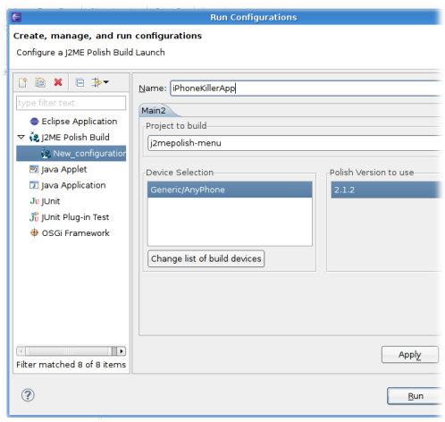
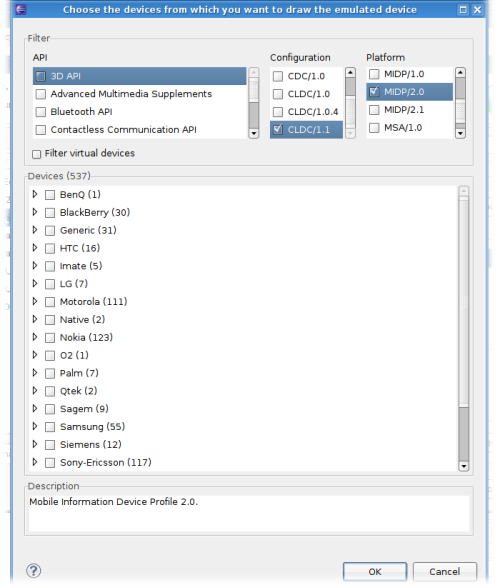
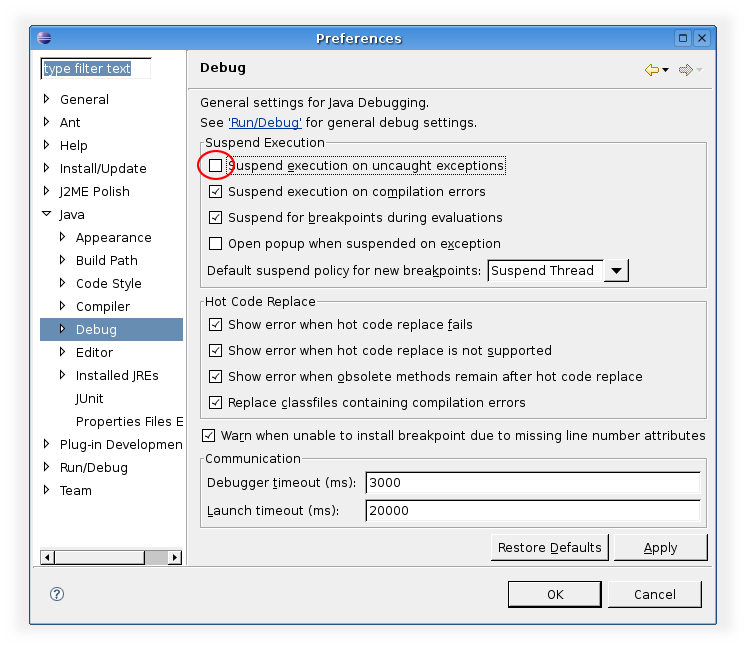

<%define inDocumentationSection %>
<%define inDocumentationSection.install %>
<%define inDocumentationSection.mepose %>
<%set title = J2ME Polish: Mepose %>
<%set basedir = ../ %>
<%include start.txt %>
Running and Debugging a J2ME Polish Project
<%index %>
Create a J2ME Polish launch configuration by selecting "Run/Run Configurations..." and then "J2ME Polish"

Select the devices you want to build for. You can filter the list of devices by the platform and supported APIs.

Then launch!
Troubleshooting Debugging
In case you have trouble with the debugging, please check your debugging preferences in Eclipse (Window/Preferences).
Go to the "Debug" panel and uncheck the item "Suspend execution on uncaught exceptions".

<%include end.txt %>